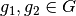
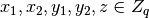
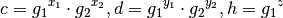
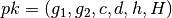
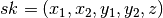
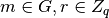
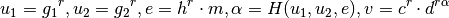
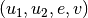
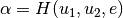
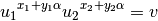

How To Get Started¶
Installation and dependencies¶
See Platform Install Manual for installation instructions.
Implement a Scheme¶
Interested in implementing your cryptographic scheme in Charm? Here’s a guide to navigate our framework to implement your cryptosystem. The following provides an example implementation compared with the algorithm described in the research paper.
We begin with a public-key encryption scheme due to Cramer-Shoup 1998 http://knot.kaist.ac.kr/seminar/archive/46/46.pdf, which is provably secure against adaptive chosen ciphertext attacks.
Typical implementations follow an object-oriented model such that an implementation of a cryptosystem can be easily reused or extended for other purposes. To this end, we provide several base classes with standard interfaces for a variety of cryptographic primitives such as PKEnc or public-key encryption, PKSig or public-key signatures, ABEnc or attribute-based encryption and many more. So, the following describes the python code that implements the Cramer-Shoup PKEnc scheme in Charm:
from charm.toolbox.ecgroup import ECGroup
class CS98(PKEnc):
def __init__(self, curve):
PKEnc.__init__(self)
global group
group = ECGroup(curve)
Before we get started, it is important to understand that in our toolbox each cryptographic setting has a corresponding group abstraction such as elliptic curve group or ECGroup, pairing group or PairingGroup, and integer groups or IntegerGroup. This abstraction provides a simple interface for selecting group parameters, performing group operations, and etc. See the toolbox documentation for more details.
Thus, at the beginning of the scheme, you must import the corresponding group setting in which the cryptographic scheme will be implemented
from charm.toolbox.ecgroup import ECGroup
Next, let’s explain what goes on during class initialization. During __init__, you define the basic security properties of the PKEnc scheme and in this case accept as input a NIST standard elliptic curve identifier. The group object can either be defined globally or defined as a class member. The idea is that any routine within this scheme will have access to the group object to perform any operation. In our example, we define group as a global variable. Alternatively, you could define group as self.group = ECGroup(curve).
Note
Also, the init routine arguments can vary depending on the scheme and group setting. What is shown above is only an example and see other schemes we have implemented for other possibilities.
We describe the first algorithm in the paper, keygen. Keygen only accepts a security parameter and generates the public and private keys and returns to the user. The paper description is as follows:





Random elements (1) are chosen and random elements (2) are also chosen. Next, the group elements (3) are computed. Select a hash function H from the family of universal one-way hash functions. The public key is defined by (4) and the private key is defined by (5). Below is the Charm keygen function defined in the CS98 class:
def keygen(self, secparam):
g1, g2 = group.random(G), group.random(G)
x1, x2, y1, y2, z = group.random(ZR), group.random(ZR), group.random(ZR), group.random(ZR), group.random(ZR)
c = (g1 ** x1) * (g2 ** x2)
d = (g1 ** y1) * (g2 ** y2)
h = (g1 ** z)
pk = { 'g1' : g1, 'g2' : g2, 'c' : c, 'd' : d, 'h' : h, 'H' : group.hash }
sk = { 'x1' : x1, 'x2' : x2, 'y1' : y1, 'y2' : y2, 'z' : z }
return (pk, sk)



We now describe the encrypt routine as described by the paper. Given a message in G, the encryption algorithm first selects a random integer r (6), then computes (7) and returns the ciphertext as (8). The encrypt algorithm defined in Charm:
def encrypt(self, pk, m):
r = group.random(ZR)
u1 = pk['g1'] ** r
u2 = pk['g2'] ** r
e = group.encode(m) * (pk['h'] ** r)
alpha = pk['H'](u1, u2, e)
v = (pk['c'] ** r) * (pk['d'] ** (r * alpha))
return { 'u1' : u1, 'u2' : u2, 'e' : e, 'v' : v }



Finally, the decryption routine as described by the paper. Given a ciphertext, the decryption algorithm runs as follows and first computes (9), and tests if (10) condition holds, and if so outputs (11) otherwise “reject”. The decrypt algorithm defined in Charm:
def decrypt(self, pk, sk, c):
alpha = pk['H'](c['u1'], c['u2'], c['e'])
v_prime = (c['u1'] ** (sk['x1'] + (sk['y1'] * alpha))) * (c['u2'] ** (sk['x2'] + (sk['y2'] * alpha)))
if (c['v'] != v_prime):
return 'reject'
return group.decode(c['e'] / (c['u1'] ** sk['z']))
Note
Since the scheme defines messages as a group element, it is important to use the encode/decode methods to convert the message string into a member of the group, G. This helps transform a cryptographic scheme usable for a real application. However, the pairing group does not currently implement the routines for encoding/decoding messages as group elements. We utilize other techniques for pairings to provide the ability to convert from/to different message spaces.
This concludes the tutorial on a straightforward implementation of the Cramer-Shoup public-key encryption cryptosystem.
Using a Scheme¶
To use any of our existing schemes in your application, each scheme includes a main routine that runs through every alorithm (with sample inputs) defined for that scheme. Thus, the main function provides a test that the scheme works in addition to demonstrate how to use it. For example, below is an example of how to instantiate the Cramer-Shoup scheme from above within your application:
from schemes.pkenc.pkenc_cs98.py import CS98
from charm.toolbox.eccurve import prime192v1
from charm.toolbox.ecgroup import ECGroup
groupObj = ECGroup(prime192v1)
pkenc = CS98(groupObj)
(pk, sk) = pkenc.keygen()
M = b'Hello World!'
ciphertext = pkenc.encrypt(pk, M)
message = pkenc.decrypt(pk, sk, ciphertext)
Group Abstractions¶
We now describe how to take advantage of Charm’s group abstraction. Modern cryptographic algorithms are typically implemented on top of mathematical groups based on certain hardness assumptions (e.g., Diffie-Hellman). We provide the same building blocks to facilitate development in this way of thinking:
At the moment, there are three cryptographic settings covered by Charm: integergroups, ecgroups, and pairinggroups.
To initialize a group in the EC, refer to the toolbox.eccurve for all the full set of identifiers for supported NIST approved curves (e.g., prime192v1). For EC with billinear maps (or pairings), we provide a set of identifiers for both symmetric and asymmetric curves. For example, the 'SS512' represents a symmetric curve with a 512-bit base field and 'MNT159' represents an asymmetric curve with 159-bit base field.
Finally, for integer groups, typically defining large primes p and q is enough to generate an RSA group. For schnorr groups, these group parameters may take some time to generate because they require safe primes (e.g., p = 2q + 1). Here are detailed examples below for integer and pairing groups (see above for EC group initialization):
from charm.toolbox.integergroup import IntegerGroup
group1 = IntegerGroup()
group1.paramgen(1024)
g = group1.randomGen()
from charm.toolbox.pairinggroup import PairingGroup,G1
group2 = PairingGroup('SS512')
g = group2.random(G1)
Using serialization API¶
To support serialization of key material and ciphertexts, we provide two high-level API calls to serialize charm objects embedded in arbitrary python structures (e.g., lists, tuples, or dictionaries, etc) which are objectToBytes() and bytesToObject() from the charm.engine.util package. These functions provide the necessary functionality for converting keys and ciphertexts to base 64 encoded strings. Both calls require the object to be serialized/deserialized and a class that defines the serialize and deserialize methods such as the group object.
We also show below how to customize our serialization routines:
Here is an example of how to use the API with any of the supported group objects (integergroup, pairinggroup or ecgroup):
from charm.engine.util import objectToBytes,bytesToObject
pk_bytes = objectToBytes(pk, group)
orig_pk = bytesToObject(pk_bytes, group)
If you would like to define your own custom serialization routine in conjunction with our API, the following example works for schemes based on the integergroup which in some cases do not utilize a group object:
from charm.core.math.integer import integer,serialize,deserialize
class mySerializeAPI:
def __init__(self)
...
def serialize(self, charm_object):
assert type(charm_object) == integer, "required type is integer, not: ", type(charm_object)
return serialize(charm_object)
def deserialize(self, object):
assert type(object) == bytes, "required type is bytes, not: ", type(object)
return deserialize(object)
from charm.engine.util import objectToBytes,bytesToObject
serObject = mySerializeAPI()
pk_bytes = objectToBytes(pk, serObject)
orig_pk = bytesToObject(pk_bytes, serObject)
Feel free to send us suggestions, bug reports, issues and scheme implementation experiences within Charm at support@charm-crypto.com. Thank you!